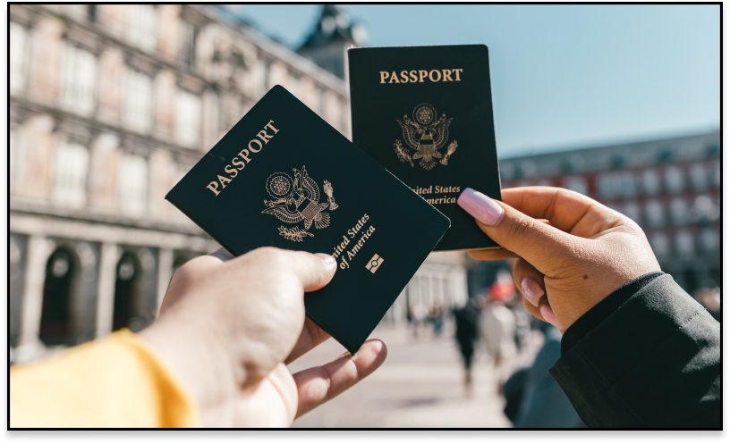
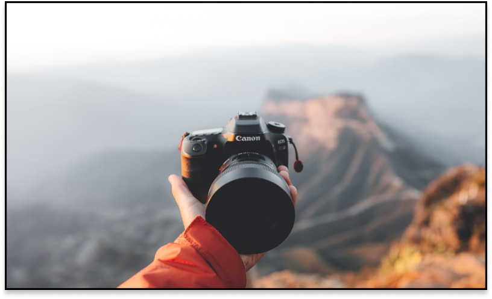
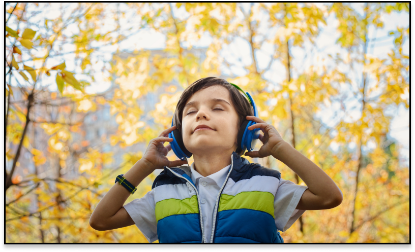

Gezi ve Seyahat Etmek

Küçük yaştan beri gezi ve seyahat etme hobisi benim için büyük bir tutku. Farklı şehirleri keşfetmek, benzersiz manzaraları görmek beni heyecanlandırıyor. Seyahat ettiğim yerlerde yemeklerin tadına bakmak, tarihi mekanları ziyaret etmek ve doğanın güzelliklerini keşfetmek beni mutlu ediyor.
Fotoğrafcılık

Fotoğraf çekmek benim için bir tutku ve yaşam tarzı haline geldi. Her anı ölümsüzleştirmek ve görsel bir anlatı oluşturmak için objektifin arkasında zaman geçirmeyi seviyorum. Doğanın güzelliklerini keşfetmek, insanların hikayelerini yakalamak ve farklı kültürleri belgelemek benim için bir macera. Her fotoğraf çekimi, yeni bir deneyim ve öğrenme fırsatı sunuyor.
Müzik Dinlemek

Müzik dinlemek benim için ruhumu besleyen bir aktivite. Bir şarkının ritmine ve melodisine kapıldığımda, başka bir dünyaya yolculuk yapıyorum. Müzik, stresimi azaltıyor, enerji veriyor ve hayatıma renk katıyor. En sevdiğim şarkıları başkalarıyla paylaşarak onları da etkilemek ve müziğin gücünü yaymak benim için bir mutluluk kaynağıdır.